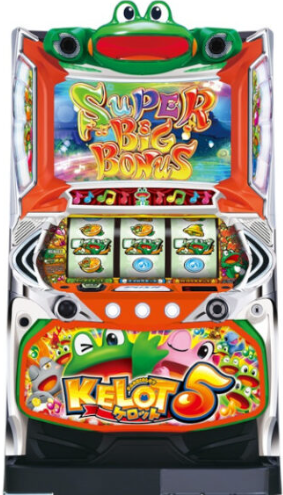

目次

スマスロケロット5BTKEROT5BT ｜ 山佐
設定6 機械割
111.0%
設定1 機械割
98.2%
設定6 合算確率
1/110.3
SBB獲得枚数
BT込み約317枚
⚠️ 6段階設定（設定1〜6）のノーマル+BT機。ケロットシリーズ最新作で、3種のゲームモード（ノーマル/スゴロク/虹河ラキ）を搭載。RB確率に大きな設定差あり。
スマスロケロット5BT スペック・機械割
| 設定 | BB合算 | RB | ボーナス合算 | 機械割 |
|---|---|---|---|---|
| 1 | 1/232.4 | 1/350.5 | 1/139.7 | 98.2% |
| 2 | 1/230.8 | 1/341.3 | 1/137.7 | 99.1% |
| 3 | 1/229.1 | 1/324.4 | 1/134.3 | 101.1% |
| 4 | 1/218.5 | 1/299.3 | 1/126.3 | 104.5% |
| 5 | 1/215.6 | 1/274.2 | 1/120.7 | 107.0% |
| 6 | 1/204.8 | 1/239.2 | 1/110.3 | 111.0% |
BB:RBの比率は設定1で6:4。SBB（スーパービッグ）とBBの比率は約1:1です。RB確率に大きな設定差（設定1:1/350.5 → 設定6:1/239.2）があり、設定判別の重要指標となります。
遊技時間別・理論差枚数の目安
G/時間
| 設定 | 機械割 | 差枚数/1h | 差枚数/3h | 差枚数/5h | 差枚数/8h |
|---|---|---|---|---|---|
| 1 | |||||
| 2 | |||||
| 3 | |||||
| 4 | |||||
| 5 | |||||
| 6 |
期待収支（pt換算）
| 設定 | 機械割 | 期待収支/1h | 期待収支/3h | 期待収支/5h | 期待収支/8h |
|---|---|---|---|---|---|
| 1 | 98.2% | ||||
| 2 | 99.1% | ||||
| 3 | 101.1% | ||||
| 4 | 104.5% | ||||
| 5 | 107.0% | ||||
| 6 | 111.0% |
スマスロケロット5BT 小役確率
ℹ️ 小役確率は現在調査中です。情報が判明し次第更新いたします。
スマスロケロット5BT 設定判別ポイント
- ① RB確率（最重要）：設定1（1/350.5）vs 設定6（1/239.2）と大きな設定差あり。REGが軽い台は高設定期待度UP。
- ② ボーナス合算確率：設定1（1/139.7）vs 設定6（1/110.3）。合算が軽いほど高設定の可能性が高まります。
- ③ ケロットトロフィー系設定示唆：ケロットシリーズ伝統の設定示唆演出。出現パターンに注目してください。
ℹ️ 6段階設定（設定1〜6）です。RB確率の設定差が最も大きく、長時間稼働ほど信頼度が高まります。
スマスロケロット5BT ボーナス概要
| ボーナス | 獲得枚数 | 特徴 |
|---|---|---|
| SBB（スーパービッグ） | BT込み約317枚 | BT搭載の上位ビッグボーナス |
| BB（ビッグ） | 最大209枚 | 通常のビッグボーナス |
| RB | — | 毎Gチャレンジ搭載 |
SBBとBBの比率は約1:1。BB:RBの比率は設定1で6:4です。SBBではBT込みで約317枚の獲得が見込め、ノーマル+BT機ならではの出玉感が楽しめます。
ゲームモード
| モード | 特徴 |
|---|---|
| ノーマルモード | スタンダードな告知演出 |
| スゴロクモード | スゴロク風の演出で楽しめるモード |
| 虹河ラキモード | ラキ★バレ告知搭載（告知時ボーナス期待度約70%） |
設定判別ツール
ボーナス回数を入力してください。ボーナス合算確率から各設定の出現しやすさを推定します。
スマスロケロット5BT よくある質問
スマスロケロット5BTの設定6機械割は？
設定6の機械割は111.0%です。6段階設定（設定1〜6）で、設定1は98.2%、設定6は111.0%となっています。
スマスロケロット5BTに天井はある？
天井はありません。ノーマル+BT機のため、AT機のような天井G数は存在しません。ボーナス成立時やBT中以外はいつやめてもOKです。
スマスロケロット5BTの設定判別ポイントは？
RB確率に最大の設定差があります（設定1:1/350.5 vs 設定6:1/239.2）。ボーナス合算確率（設定1:1/139.7 vs 設定6:1/110.3）やケロットトロフィー系の設定示唆演出も有効です。
スマスロケロット5BTのやめ時は？
ノーマル+BT機のため、ボーナス成立時やBT消化中以外はいつやめてもOKです。天井狙いの概念はありません。
スマスロケロット5BTのBT（ボーナストリガー）とは？
ノーマルベースにBTを搭載した機種です。SBB（スーパービッグ）ではBT込みで約317枚の獲得が見込めます。通常のBBは最大209枚、RBは毎Gチャレンジを搭載しています。
スマスロケロット5BTのゲームモードは？
ノーマルモード・スゴロクモード・虹河ラキモードの3種類から選択可能です。ラキ★バレ告知では告知時のボーナス期待度が約70%となっています。